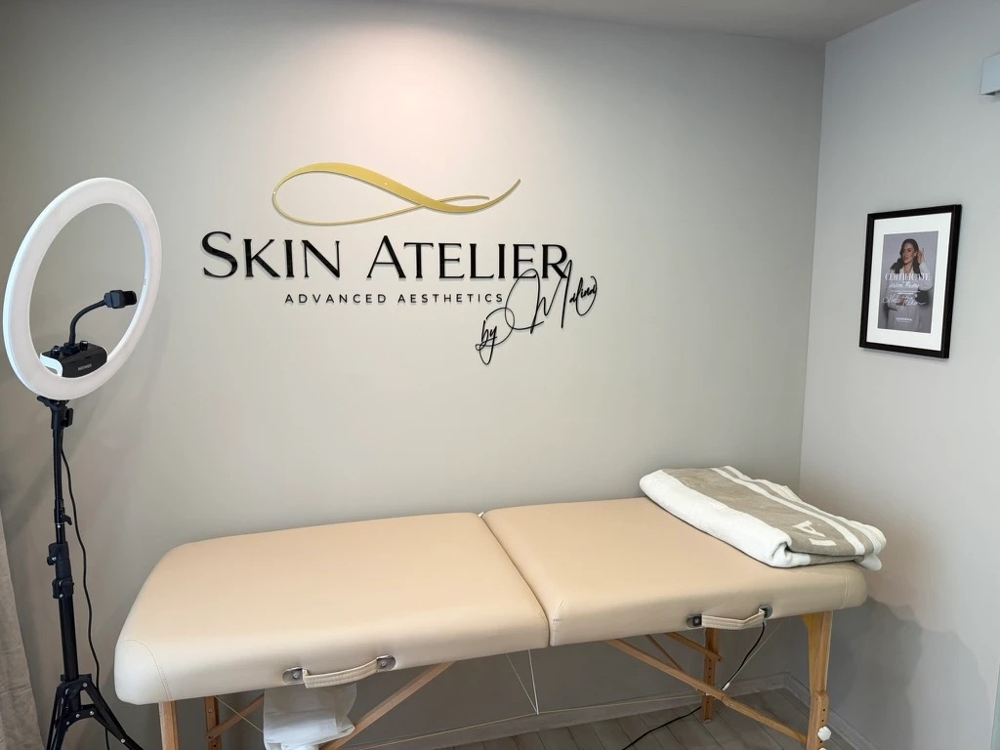

Behandlungen · Permanent Make-up
Augenbrauen-PMU
Powder Brows
Brauen, die zu deinem Gesicht passen und morgens einfach da sind. Mit ausführlicher Beratung und gemeinsamer Vorzeichnung, bevor pigmentiert wird.

Was ist PMU?
Pigment statt
täglichem Nachziehen.
Beim Permanent Make-up werden Farbpigmente in die oberste Hautschicht eingebracht. Das Ergebnis hält lange, verblasst aber mit der Zeit und wird bei Bedarf aufgefrischt.
Ich arbeite mit der Technik Powder Brows: Die Pigmente werden fein schattiert eingebracht. Das Ergebnis wirkt weich und gepudert, wie dezent geschminkte Brauen.
Ablauf
Von der Beratung
bis zum Ergebnis.
Beratung
Wir besprechen Wunschform, Farbe und ob PMU zu deiner Haut passt. Vorhandene Pigmentierungen schauen wir uns genau an.
Vorzeichnung
Ich zeichne die Form vor. Erst wenn du zufrieden bist und zustimmst, beginnen wir.
Pigmentierung
Die Behandlung selbst, in Ruhe und mit Pausen, wenn du sie brauchst.
Nacharbeit
Nach der Abheilung kommst du zur Nacharbeit. Eine Standard-Nacharbeit ist im Preis enthalten. Wir schauen uns das Ergebnis gemeinsam an und gleichen Form und Farbe bei Bedarf aus.
Heilung
Was in den Wochen
danach passiert.
Die Farbe wirkt anfangs deutlich kräftiger und hellt während der Heilung auf. Das ist normal.
Erste Tage
Die Brauen wirken dunkler und kräftiger als das spätere Ergebnis. fachlich prüfen
Etwa Woche 1–2
Die Haut schuppt sich leicht, die Farbe kann zwischenzeitlich sehr hell wirken. fachlich prüfen
Nach der Abheilung
Das Ergebnis ist verheilt. Jetzt folgt die Nacharbeit, die zu jeder PMU-Behandlung gehört.
Preis
Ein Preis, Nacharbeit inklusive
Beratung, Vorzeichnung, Pigmentierung und eine Standard-Nacharbeit nach der Abheilung sind im Preis enthalten.
Ist zusätzlicher Aufwand nötig, zum Beispiel weil die Pflegehinweise nicht eingehalten wurden, kann ein Aufpreis nach Aufwand anfallen.
-
Augenbrauen-PMU (Powder Brows)zu bestätigen
Pigmentierung der Augenbrauen nach ausführlicher Beratung und gemeinsamer Vorzeichnung.
inkl. Beratung · Vorzeichnung · Pigmentierung · Standard-Nacharbeit nach der Abheilung
-
Auffrischungzu bestätigen
Für bestehende Pigmentierungen, je nach Zeitabstand zur letzten Behandlung.
Bedingungen folgen
Ehrlich gesagt
Gut zu wissen.
Niemand kann ein bestimmtes, dauerhaftes Ergebnis versprechen. Haut reagiert unterschiedlich. Deshalb nehme ich mir für die Beratung Zeit und sage dir offen, wenn PMU nicht das Richtige für dich ist.
Tut das weh?
Wie lange hält Augenbrauen-PMU?
Wann ist PMU nicht geeignet?
Ich habe schon pigmentierte Brauen. Geht das?
Der erste Schritt ist ein Gespräch. In der Beratung klären wir alle Fragen, ganz ohne Verpflichtung.
Beratung anfragen